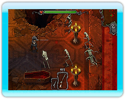

Introductie
Jaag jij 's nachts op vampiers? Ben je er klaar voor om ondode vijanden te lijf te gaan, zoals zombies, demonen, weerwolven en nog veel meer?
Dan moet je verstandig leren omgaan met een uitgebreid arsenaal aan indrukwekkende, krachtige wapens. Ontdek de |
 |
verwoestende vuurkracht van onder andere machinegeweren, vlammenwerpers en cirkelzagen. Kies upgrades voor je wapens en geef je personage een unieke bonus als hij het moet opnemen tegen een groeiend aantal vijanden dat steeds bloeddorstiger wordt.
Je bent dan wel een stoere bink, maar pas op: Lord Dracula is altijd op jacht en jij bent zijn prooi!
In dit spel wordt de Wii-afstandsbediening gebruikt in verticale positie.
Aanwijzer:
Richt op naderende vijanden.
Bonus (Perk):
Druk op de A-knop om een bonus te activeren als het bonus-icoontje gemarkeerd is (of op de A-knop op de Nintendo GameCube Controller).
Schieten:
Druk op de B-knop om te schieten (gebruik de C-Stick op de Nintendo GameCube Controller of de R-stick op de Traditionele Controller). Je schiet met het wapen dat je op dat moment draagt.
Volgend wapen:
Druk op de Z-knop, of de R-knop op de Traditionele Controller en de Nintendo GameCube Controller om het volgende wapen te selecteren.
Vorige wapen:
Druk op de C-knop of de L-knop op de Traditionele Controller en de Nintendo GameCube Controller om het volgende wapen te selecteren.
Pauze:
Druk op de plusknop of de START/PAUZE knop op de Nintendo GameCube Controller, om het spel te onderbreken.
Bewegen:
Gebruik de richtingsstick op de Nunchuk, de L-stick op de Traditionele Controller of de Control Stick op de Nintendo GameCube Controller om je personage te verplaatsen.
*Opmerking: dit spel ondersteunt de trilfunctie. Om de trilfunctie aan of uit te zetten voor de Wii-afstandsbediening, ga je naar het HOME-menu. Voor de Nintendo GameCube Controller ga je naar het optiemenu in het spel.